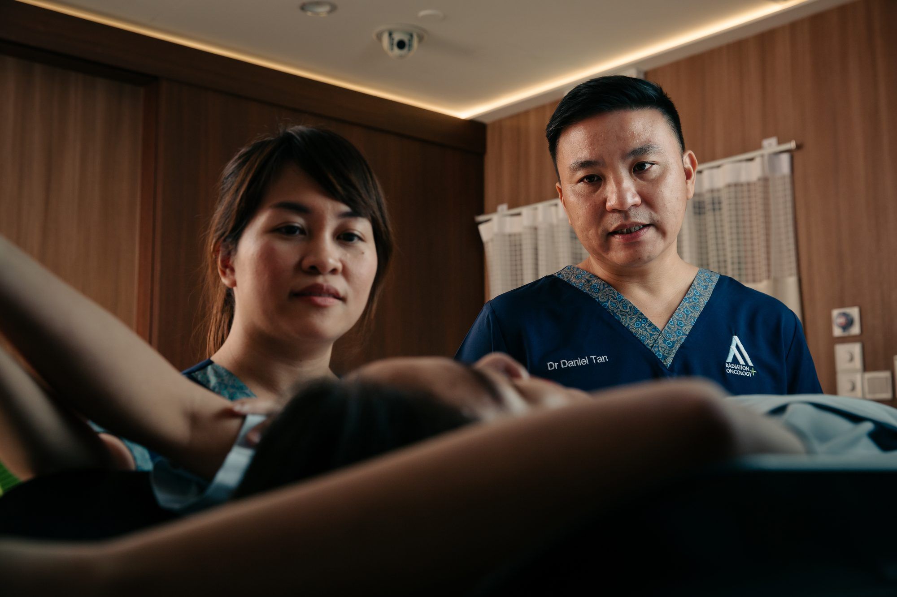

JT
Medical Director, CSR
Dr Jonathan Teh
Dr Teh leads breast and gynaecological care at the Centre for Stereotactic Radiosurgery, with deep experience in DIBH, brachytherapy boost, and APBI for early-stage disease.
View profileIt is the most common cancer in Singaporean women — and one with strong outcomes when diagnosed in time. AARO offers the full radiation toolkit: VMAT, deep-inspiration breath-hold (DIBH), accelerated partial-breast irradiation, and stereotactic body radiotherapy (SBRT) for oligometastatic disease.

Breast cancer is a malignancy that develops when cells in the breast — most commonly in the milk ducts (ductal carcinoma) or milk-producing glands (lobular carcinoma) — begin to grow uncontrollably. Left untreated, these cells can invade nearby tissue and spread (metastasise) to other parts of the body, most often to the lymph nodes, lungs, liver, bones or brain.
Breast cancer is the most common cancer in Singaporean women, with about 2,000 new cases diagnosed every year. The good news: when caught at stage 0 or stage 1, five-year survival exceeds 95%. Early detection — through routine self-examination, clinical examination, and mammographic screening — is the single most important factor in outcomes.
Many breast cancers are first detected as a painless lump. But cancer can also present without a palpable lump. The signs that warrant prompt medical evaluation include:
Most lumps are benign — but only a clinical examination, imaging and (if indicated) biopsy can confirm that. Don't wait.
Diagnosis typically follows a stepwise pathway:
Singaporean women aged 40–49 are encouraged to have a mammogram every year; women 50 and over, every two years through the BreastScreen Singapore programme.
Most women diagnosed with breast cancer have no family history. Still, several factors are associated with higher risk:
Modern breast cancer treatment is multidisciplinary by default. Most patients receive a combination of surgery, radiation therapy, and systemic therapy (chemotherapy, hormonal therapy, or targeted therapy), in a sequence tailored to their tumour biology and stage.
AARO's role is the radiation component — but our oncologists are dual-trained in chemotherapy and radiotherapy, so we co-design the full treatment plan with your surgeon and medical oncologist. The radiation modalities most relevant for breast cancer are:
The standard for whole-breast or chest-wall irradiation after surgery. VMAT delivers a precisely shaped radiation dose in a continuous arc around the patient — typically over 3–5 weeks of daily treatment.
For left-sided breast cancers, the heart sits close to the treatment area. DIBH asks the patient to take a deep breath and hold it during each radiation pulse — this expands the chest, pushing the heart away from the treatment field and dramatically reducing the radiation dose to the heart. AARO routinely offers DIBH for all eligible left-sided cases.
For carefully selected early-stage cases, the radiation can be delivered to just the area around the original tumour (rather than the whole breast), and over only 1–2 weeks instead of 3–5. AARO offers APBI for women who meet the criteria, shortening treatment without compromising outcomes.
If breast cancer has spread to a small number of distant sites (typically 1–5 lesions), SBRT can ablate each individual metastasis in 3–5 sessions. This approach can extend disease-free intervals significantly in carefully selected patients.
Dr Teh leads breast and gynaecological care at the Centre for Stereotactic Radiosurgery, with deep experience in DIBH, brachytherapy boost, and APBI for early-stage disease.
View profileDr Tseng's practice covers post-mastectomy chest-wall radiation, complex regional nodal cases, and the radiation-side-effect-management aspects of long-term breast cancer survivorship.
View profileDr Tan handles oligometastatic breast cancer (limited spread to bone, brain, lung) using SBRT and SRS — ablative radiation that can extend disease-free intervals significantly.
View profileBook a 45–60 minute specialist consultation. We'll review your imaging and pathology, explain the radiation options that apply to your case, and answer your questions.